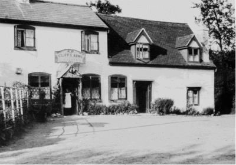
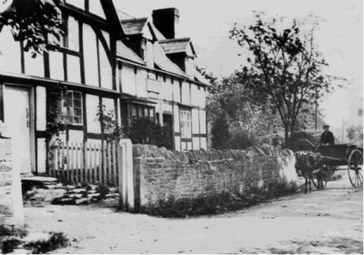

Young army battles blaze
A dramatic account of a fire which swept the Malvern Hills on Sept. 16th 1902 appeared in the Malvern Gazette. “So extensive was the space that eventually became ablaze that the flames and smoke could be seen miles off, especially in the Mathon and Cradley districts,” reported the paper.
The fire apparently began when a small patch of gorse above the Workmen’s Institute in West Malvern was set alight. The local policeman, P.C. Mann suspected schoolboy mischief, but could not prove it. “There was a strong north-easterly breeze blowing at the time and the fire soon spread until the hill was entirely aflame” the paper continued “A walk round to the Lamb Inn revealed an extensive fire tearing up the side of the hill, burning all before it and leaving in its train smouldering gorse and ferns.”
When the fire was first noticed, P.C. Mann proceeded to the spot and endeavoured to extinguish the burning bush, but his efforts were fruitless so strong was the breeze. The fire provided fine sport for the children who, armed with sticks rushed up the hill to do battle with the foe. PC Mann was the commander in chief, and under his direction they set to work to extinguish each patch of grass that had caught fire. By 6 o clock the wind had increased and so had the smoke and flames. The former was so dense that it enveloped the whole of the North Hill and it was impossible for those in the midst of it to see a yard on either side. As the evening wore on the spectacle became a weird one. The lurid glare of the flames and dense clouds of smoke and dust rose in the air, and all around was a scene of destruction.
PC Mann and his youthful army were reinforced by another contingent of boys and following them came PC Ellison who remained until the last burning embers died away” The 1891 census shows PC Mann living at Stockton. He and his wife had 9 children of their own, so possibly the little regiment he commanded were his own. In any case, he had plenty of experience of dealing with children.


Two photographs from about 1905. The “Cliffe Arms” and “Badgers” which was owned by Henry Hehir, a baker. His donkey cart was used to deliver the bread.
- Printer-friendly version
- Login to post comments